fudge package¶
Subpackages¶
- fudge.outputChannelData package
- Submodules
- fudge.outputChannelData.Q module
- fudge.outputChannelData.base module
- fudge.outputChannelData.fissionFragmentData.delayedNeutron module
- fudge.outputChannelData.fissionFragmentData.elapsedTime module
- fudge.outputChannelData.fissionFragmentData.fissionEnergyRelease module
- fudge.outputChannelData.fissionFragmentData.fissionFragmentData module
- fudge.outputChannelData.fissionFragmentData.incidentEnergy module
- fudge.outputChannelData.fissionFragmentData.productYield module
- Module contents
- fudge.covariances package
- Submodules
- fudge.covariances.base module
- fudge.covariances.covarianceSuite module
- fudge.covariances.distributions module
- fudge.covariances.mixed module
- fudge.covariances.modelParameters module
- fudge.covariances.covarianceSection module
- fudge.covariances.shortRangeSelfScalingVariance module
- fudge.covariances.covarianceMatrix module
- fudge.covariances.summed module
- Module contents
- fudge.processing package
- Subpackages
- fudge.processing.deterministic package
- fudge.processing.montecarlo package
- fudge.processing.resonances package
- Submodules
- fudge.processing.resonances.getCoulombWavefunctions module
- fudge.processing.resonances.getScatteringMatrices module
- fudge.processing.resonances.reconstructResonances module
- fudge.processing.resonances.makeUnresolvedProbabilityTables module
- fudge.processing.resonances.setup module
- Module contents
- Submodules
- fudge.processing.miscellaneous module
- fudge.processing.processingInfo module
- Module contents
- Subpackages
- fudge.productData package
- Subpackages
- fudge.productData.distributions package
- Subpackages
- Submodules
- fudge.productData.distributions.Legendre module
- fudge.productData.distributions.angular module
- fudge.productData.distributions.angularEnergy module
- fudge.productData.distributions.base module
- fudge.productData.distributions.energy module
- fudge.productData.distributions.energyAngular module
- fudge.productData.distributions.miscellaneous module
- fudge.productData.distributions.photonScattering module
- fudge.productData.distributions.uncorrelated module
- Module contents
- fudge.productData.distributions package
- Submodules
- fudge.productData.averageProductEnergy module
- fudge.productData.averageProductMomentum module
- fudge.productData.multiplicity module
- Module contents
- Subpackages
- fudge.reactionData package
- fudge.reactions package
Submodules¶
fudge.abstractClasses module¶
- class fudge.abstractClasses.Component(allowedClasses)[source]¶
Bases:
Suite,ABC- property evaluated¶
- parseNode(node, xPath, linkData, **kwargs)[source]¶
This method must be overrwritten by the derived class.
- removeStyles(styleLabels)[source]¶
Removes all forms whose label matches one of the labels in removeStyles.
- toPointwise_withLinearXYs(**kwargs)[source]¶
This method calls the toPointwise_withLinearXYs method for the evaluated style and returns a “lin-lin” pointwise representation of it.
- Parameters:
lowerEps – lower epsilon for converting discontinuities to monotonic function
upperEps – upper epsilon for converting discontinuities to monotonic function
- class fudge.abstractClasses.Form[source]¶
Bases:
AncestryIO,ABCThis is the base class which is used as a form base class for outputChannelData, reactionData and productData form classes.
- class fudge.abstractClasses.LazyParsingHelper(keyName, node, Class, linkData, **kwargs)[source]¶
Bases:
AncestryThis class stores the required data needed to parse a node. When parsing is needed, the parse method will returned the constructed instance.
- property keyName¶
Returns the keyName for self.
- property keyValue¶
Returns the keyValue for self.
- property label¶
Returns the keyValue for self.
- moniker = 'LazyParsingHelper'¶
fudge.defaults module¶
Define user-configurable defaults.
fudge.documentation module¶
This module contains the documentation class.
- class fudge.documentation.Documentation(name, documentation)[source]¶
Bases:
AncestryIOFor storing descriptive information, either about the reactionSuite or about an individual reaction.
- moniker = 'documentation'¶
fudge.externalFile module¶
This module contains the externalFile class, used to keep track of connections between GNDS files.
- class fudge.externalFile.ExternalFile(label, path, checksum=None, algorithm='sha1')[source]¶
Bases:
AncestryIOAn externalFile contains a unique label, and the relative path to another file (unix path representation).
- property algorithm¶
- property checksum¶
- property instance¶
- property label¶
- moniker = 'externalFile'¶
- classmethod parseNodeUsingClass(node, xPath, linkData, **kwargs)[source]¶
This method must be overrwritten by the derived class.
- property path¶
fudge.fudgeVersion module¶
fudge.institution module¶
This module defines the ‘institution’ class, used inside GNDS to store institution-specific data that does not necessarily conform to GNDS specifications.
Within a reactionSuite (or possibly covarianceSuite), institution data is stored inside an <applicationData> section. Each institution has a unique label and a list of data types. The only restriction on those data types is that they be well-formed xml. Codes reading in GNDS files are free to ignore any unrecognized institution or data type.
- class fudge.institution.Institution(label)[source]¶
Bases:
AncestryIO- property data¶
- keyName = 'label'¶
- property label¶
- moniker = 'institution'¶
- parseAndReplace(index, cls)[source]¶
Replaces the unknown item at index with a parsed version of its self using class cls. The parsed instance is also returned. This currently assumes that the data are from XML.
- Parameters:
index – The index of self.__data of the data to parse and replace.
cls – The class used to parse the data at index.
- Returns:
The parsed instance.
- class fudge.institution.UnknownInstitution(node)[source]¶
Bases:
AncestryIO- keyName = 'label'¶
- property label¶
This method returns the label of self.
- moniker = 'institution2'¶
- property node¶
This method returns the node instance of self.
- class fudge.institution.UnknownInstitutionXML_node(XML_node)[source]¶
Bases:
object- property label¶
This method returng the XML text that was not parsed.
- property stringList¶
This method returng the XML text that was not parsed.
- class fudge.institution.UnknownLLNL_XML_child(XML_node)[source]¶
Bases:
objectAn XML sub-node for use with an UnknownLLNL_child instance.
- property stringList¶
This method returng the XML text that was not parsed.
- class fudge.institution.UnknownLLNL_child(moniker, node)[source]¶
Bases:
AncestryThis class stores a child node of ‘applicationData/institution[‘[@label=”LLNL”]’ which is not supported by a class under the fudge module (i.e., directory). Currently, only the ENDFconversionFlags class is not supported by the fudge module.
- property moniker¶
This method returns the moniker of self.
- property node¶
This method returns the node instance of self.
fudge.map module¶
This module contains classes for dealing with a GNDS map file. A map file creates a nuclear data library from a list of GNDS reactionSuite files.
Example of expected usage:
from fudge import map as mapModule
file = '/path/to/GIDI/Test/Data/MG_MC/all_maps.map'
map = mapModule.read( file ) # Read in a map file.
m_O16 = map.find( 'n', 'O16' ) # Gets a reference to a map Protare instance for "n + O16".
O16 = m_O16.read( ) # Creates a FUDGE protare (i.e., reactionSuite instance).
Note, in general, most user should get a protare (i.e., GNDS reactionSuite) this way.
- class fudge.map.Base(checksum=None, algorithm=None)[source]¶
Bases:
AncestryIOBase class used by all other map related classes. Mainly inherits class
ancestryModule.AncestryIOand adds the members checksum and algorithm.The following table list the primary members of this class:
Member
Description
checksum
The check sum of the file referrence by the path member.
algorithm
The algorithm used to calculate checksum.
- property algorithm¶
Returns the algorithm used to compute the checksum for this entry.
- property checksum¶
Return checksum for this map entry.
- abstract property path¶
- standardXML_attributes(checkAncestor=True)[source]¶
Returns the XML attribute string for checksum and algorithm. Mainly for internal use. If checkAncestor is True and self’s ancestor uses the same algorithm as self, then the algorithm attribute string is not included in the returned string.
- Parameters:
checkAncestor – Used to determine if algorithm needed to be added to attribute string.
- Returns:
XML attribute string for checksum and algorithm.
- class fudge.map.EntryBase(path, checksum=None, algorithm=None)[source]¶
Bases:
BaseBase class for all map entry classes.
The following table list the primary members of this class:
Member
Description
path
The file path to the file to read in for this entry.
checksum
The check sum of the file referrence by the path member.
algorithm
The algorithm used to calculate checksum.
- buildFileName(mapDirectory=None)[source]¶
This method is designed to aid in building a map file when the map file does not reside in its final resting place. The value of mapDirectory should be the final resting place (i.e., directory) of the map file. Otherwise, this method is the same as the propery methods fileName.
- Parameters:
mapDirectory – The final directory where the map file will reside if it is different than “./”.
- property fileName¶
Returns the file name for the location of self. Unlike the method
path(), this will always be the absolute path.
- property path¶
Returns the value of the __path member. This may be absolute or relative.
- class fudge.map.FormatVersion[source]¶
Bases:
objectThis class is only needed because some legacy map files (map files created before the map node was defined in GNDS) are still used at LLNL. When these map files are no longer used, this class will be removed. New map files should only be created with GNDS format ‘2.0’.
- allowed = ('0.1', '0.2', '1.10', '2.0.LLNL_4', '2.0')¶
- static check(format)[source]¶
This methods should be used to check that the format of a map file is valid. Also, the returned value is the format that should be used after calling this method.
- Parameters:
format – The format string to check.
- Returns:
The format that should be used by other logic in this module.
- default = '2.0'¶
- version_0_1 = '0.1'¶
- version_0_2 = '0.2'¶
- class fudge.map.Import(path, checksum=None, algorithm=None)[source]¶
Bases:
EntryBaseClass representing an ‘import’ entry in a map. An import entry specifies the location of another map file to import.
The following table list the primary members of this class:
Member
Description
path
The file path to the map file in for this entry.
checksum
The check sum of the file referrence by the path member.
algorithm
The algorithm used to calculate checksum.
- property derivedPath¶
Returns the parent part of the ancestor’s path. This, together with self’s path defines the location of the map file to read in.
- Returns:
The parent part of the ancestor’s path.
- find(projectile, target, library=None, evaluation=None)[source]¶
Calls
Map.find()on self.__map and returns its results.- Parameters:
projectile – The name of the projectile to match.
target – The name of the projectile to match.
library – The name of the library to match.
evaluation – The name of the evaluation to match.
- Returns:
Returns the found entry or None is no match was found.
- findAllOf(projectile=None, target=None, library=None, evaluation=None)[source]¶
Calls
Map.findAllOf()on self.__map and returns its results. Arguments that are None match all values of their type. For example, if projectile is None, then all projectiles are a match.- Parameters:
projectile – The name of the projectile to match.
target – The name of the projectile to match.
library – The name of the library to match.
evaluation – The name of the evaluation to match.
- Returns:
Returns the list of all matches found.
- iterate()[source]¶
Iterates over all protares and TNSLs in self’s map including nested
Mapinstances. NoImportinstances is returned.
- property map¶
Returns a reference to self.__map.
- moniker = 'import'¶
- classmethod parseNodeUsingClass(node, xPath, linkData, **kwargs)[source]¶
Creates an
Importinstance from an import node.- Parameters:
node – Node to parse.
xPath – Currently not used.
linkData – Currently not used.
kwargs – A keyword list.
- Returns:
Importinstance.
- readMap()[source]¶
Reads in the map file pointed to by self if not already read in. An import only reads its map file when needed.
- toXML_strList(indent='', **kwargs)[source]¶
Returns a list of str instances representing the XML lines of self.
- Parameters:
indent – The amount of indentation for each line. Child nodes and text may be indented more.
kwargs – A keyword list.
- Returns:
List of str instances representing the XML lines of self.
- class fudge.map.Map(library, path, parentsDir='', format='2.0', checksum=None, algorithm=None)[source]¶
Bases:
BaseThis class represents a GNDS map that is used to create a nuclear data library from a list of
ProtareTNSLandImportinstances. Each instance in the list is called an entry.The following table list the primary members of this class:
Member
Description
library
The name of the library.
path
The path to the map file read in.
parentsDir
May be deprecated, needs more investigating.
format
The format version for the map read in.
checksum
The check sum of the file referrence by the path member.
algorithm
The algorithm used to calculate checksum.
- property fileName¶
Returns the file name for the location of self. Unlike the method
path(), this will always be the absolute path.
- find(projectile, target, library=None, evaluation=None)[source]¶
Returns the first entry matching projectile, target, library and evaluation. Searches each entry in the order they were appended and dives into imported maps. If library is None, then all libraries are treated as matched. If evaluation is None, then all evaluations are treated as matched.
- Parameters:
projectile – The GNDS PoPs id for the projectile to match.
target – The GNDS PoPs id for the target to match.
library – The name of the library to match.
evaluation – The name of the evaluation to match.
- Returns:
Returns the found entry or None is no match was found.
- findAllOf(projectile=None, target=None, library=None, evaluation=None)[source]¶
Returns a list of all entries matching projectile, target, library and evaluation. Searches all imported maps. If library is None, the all libraries are treated as matched. If evaluation is None, the all evaluations are treated as matched.
- Parameters:
projectile – The GNDS PoPs id for the projectile to match.
target – The GNDS PoPs id for the target to match.
library – The name of the library to match.
evaluation – The name of the evaluation to match.
- Returns:
Returns the list of all entries that match the input arguments.
- property format¶
Returns to format for self.
- iterate()[source]¶
Iterates over all protares and TNSLs in self including those in import entries. Ergo, unlike
__getitem__, this method dives into import entries. That is, noImportinstances is returned.
- property library¶
Returns the library name for self.
- moniker = 'map'¶
- classmethod parseNodeUsingClass(node, xPath, linkData, **kwargs)[source]¶
Creates a Map instance from an map node.
- Parameters:
node – Node to parse.
xPath – Currently not used.
linkData – Currently not used.
kwargs – A keyword list.
- Returns:
Mapinstance.
- property path¶
Returns the path this map was read from or may be written to. It may be absolote or relative, depending on how it was initialize.
- static read(fileName, **kwargs)[source]¶
Reads in the file name fileName and returns a Map instance.
- Parameters:
fileName – The file to read in and parse.
kwargs – A keyword list.
- Returns:
Mapinstance.
- toXML_strList(indent='', **kwargs)[source]¶
Returns a list of str instances representing the XML lines of self.
- Parameters:
indent – The amount of indentation for each line. Child nodes and text may be indented more.
kwargs – A keyword list.
- Returns:
List of str instances representing the XML lines of self.
- unrecurseAndSave(newFileName)[source]¶
Iterate through all entries recursively and save as a flattened map files to file newFileName. Ergo, produces a similar
Mapinstance but with no import entries.- Parameters:
newFileName – New filename to which flattened mapfile will be saved.
- Returns:
Returns the flattened
Mapinstance.
- class fudge.map.Protare(projectile, target, evaluation, path, interaction, checksum=None, algorithm=None)[source]¶
Bases:
ProtareBaseThe class for a map’s protare child node.
The following table list the primary members of this class:
Member
Description
projectile
The name of the projectile.
target
The name of the target.
evaluation
The name of the evaluation.
interaction
The type of interacter for the protare.
path
The file path to the file to read in for this entry.
checksum
The check sum of the file referrence by the path member.
algorithm
The algorithm used to calculate checksum.
- moniker = 'protare'¶
- classmethod parseNodeUsingClass(node, xPath, linkData, **kwargs)[source]¶
Creates a Protare instance from a protare node.
- Parameters:
node – Node to parse.
xPath – Currently not used.
linkData – Currently not used.
kwargs – A keyword list.
- Returns:
A
Protareinstance.
- toXML_strList(indent='', **kwargs)[source]¶
Returns a list of str instances representing the XML lines of self.
- Parameters:
indent – The amount of indentation for each line. Child nodes and text may be indented more.
kwargs – A keyword list.
- Returns:
List of str instances representing the XML lines of self.
- class fudge.map.ProtareBase(projectile, target, evaluation, path, interaction, checksum=None, algorithm=None)[source]¶
Bases:
EntryBaseBase class for all protare-like entry classes (i.e., the
ProtareandTNSLclasses).The following table list the primary members of this class:
Member
Description
projectile
The name of the projectile.
target
The name of the target.
evaluation
The name of the evaluation.
interaction
The type of interacter for the protare.
path
The file path to the file to read in for this entry.
checksum
The check sum of the file referrence by the path member.
algorithm
The algorithm used to calculate checksum.
- static adaptable(item1, item2)[source]¶
Returns True whenever item2 is None or item1 and item2 are the same. For internal use.
- Parameters:
item1 – Item to compare to item2.
item2 – Item to compare to item1.
- property derivedPath¶
Returns the location of the file pointed to by the path member relative to the ancestor’s locations.
- property evaluation¶
Returns the evaluation string.
- property guessedInteraction¶
Returns the guessedInteraction value. This is for pre GNDS 2.0 use only and should not be used with GNDS 2.0 or higher (i.e., it should always return False for GNDS 2.0 or higher).
- property interaction¶
Returns the interaction attribute.
- isMatch(projectile, target, library=None, evaluation=None)[source]¶
Returns True is self matches projectile, target, library and evaluation, and False otherwise. If an argument has a value of None, that argument is a match. For example, isMatch( None, “O16”, None, None ) will match any entry with a target of “O16”.
- Parameters:
projectile – The requested projectile’s PoPs id to check for match.
target – The requested target’s PoPs id to check for match.
library – The requested library to check for match.
evaluation – The requested evaluation to check for match.
- Returns:
Returns True if a match and False otherwise.
- property library¶
Returns the name of the library the protare resides in.
- preview(haltParsingMoniker='styles')[source]¶
This method calls
GNDS_fileModule.preview with *haltParsingMoniker*()with self’s fileName and returns its retults. See :py:func:`GNDS_fileModule.preview for more details.- Parameters:
haltParsingMoniker – The child node of the protare to halt parsing on.
- Returns:
An instance of
reactionSuiteModule.ReactionSuite.
- property projectile¶
Returns the projectile’s name.
- read(verbosity=0, lazyParsing=True)[source]¶
Reads in the protare using the read function in the module ReactionSuite.py and returns the instance.
- Parameters:
verbosity – Passed onto ReactionSuite.read.
lazyParsing – Passed onto ReactionSuite.read.
- standardXML_attributes(checkAncestor=True)[source]¶
Returns the XML attribute string for protare, target, evalution and interaction as well that those returned by
Base.standardXML_attributes().- Parameters:
checkAncestor – Passed to the method
Base.standardXML_attributes().- Returns:
A XML attribute string.
- property target¶
Returns the target’s name.
- class fudge.map.TNSL(projectile, target, evaluation, path, standardTarget, standardEvaluation, interaction=None, checksum=None, algorithm=None)[source]¶
Bases:
ProtareBaseThe class for a map’s TNSL node.
The following table list the primary members of this class:
Member
Description
projectile
The name of the projectile.
target
The name of the target.
evaluation
The name of the evaluation.
path
The file path to the file to read in for this entry.
standardTarget
Name for the standard target.
standardEvaluation
Name for the standard evaluation.
checksum
The check sum of the file referrence by the path member.
algorithm
The algorithm used to calculate checksum.
- moniker = 'TNSL'¶
- classmethod parseNodeUsingClass(node, xPath, linkData, **kwargs)[source]¶
Creates a TNSL instance from a TNSL node.
- Parameters:
node – Node to parse.
xPath – Current not used.
linkData – Currently not used.
kwargs – A keyword list.
- Returns:
A
TNSLinstance.
- property standardEvaluation¶
Returns the standardEvaluation.
- property standardTarget¶
Returns the standardTarget.
- toXML_strList(indent='', **kwargs)[source]¶
Returns a list of str instances representing the XML lines of self.
- Parameters:
indent – The amount of indentation for each line. Child nodes and text may be indented more.
kwargs – A keyword list.
- Returns:
List of str instances representing the XML lines of self.
fudge.outputChannel module¶
In GNDS, an output channel (dubbed outputChannel) contains all outgoing products from either a reaction (also called an interaction) or since a product may subsequently decay, the decay products for a for. This means that a reaction node has an outputChannel and a product may have an outputChannel.
For example, consider the following nuclear reaction:
n + O16 –> n + ( O16_e6 -> He4 + C12 )
This interaction represents a neutron hitting an Oxygen-16 target producing a n and Oxygen-16 in the 6th excited. The excited Oxygen-16 subsequently decays into He4 and C12. The output channel for this interaction is “n + O16_e6” and the “O16_e6” contains the decay channel “He4 + C12”.
Output and decay channels can be further divided into twoBody or NBody channels.
- twoBody:
The channel initially has two products whose angular and energy correlates are known. Only the center-of-mass angular data for one of the products is needed. The products’ outgoing energies can be calculated from their center-of-mass angular information and other data like the masses of the products involved in a reaction or decay.
- NBody:
The channel has two or more products whose angular and energy correlates are not known. The full double differential data for each product must be given.
- class fudge.outputChannel.OutputChannel(genre, process=None)[source]¶
Bases:
AncestryIOThis is the GNDS outputChannel which is a Q value and a list of products (i.e., product objects).
- property Q¶
- ancestryMembers = ('Q', 'products', 'fissionFragmentData')¶
- calculateAverageProductData(style, indent='', **kwargs)[source]¶
Calculate average product data.
- Parameters:
style – The style to use.
indent – string; The amount to indent and verbose output.
kwargs – string; All other parameters.
- Returns:
- property fissionFragmentData¶
- fixDomains(labels, energyMin, energyMax)[source]¶
Calls the fixDomains for the Q, products and fissionFragmentDat members.
- property genre¶
- getFinalProductList()[source]¶
Returns a list of [ multiplicity, name ] in order for the final products of this channel.
- getProductWithName(name)[source]¶
Return the product with given name. If no such product is found, or if more than one are found, raise an Exception.
- getProductsWithName(name)[source]¶
Returns a list of all the channel’s products with given name (‘gamma’,’n’, etc).
- listOfProducts(finalOnly=False, includeQualifier=True)[source]¶
Returns, as a python set, the list of PoPs ids for all products (i.e., outgoing particles) for self.
- Parameters:
finalOnly – If True, only final product ids are returned, otherwise, all are returned..
includeQualifier – If True, particle qualifiers are include in ids, otherwise, they are stripped from ids.
- Returns:
A python set instance.
- moniker = 'outputChannel'¶
- multiGroupAverageEnergy(multiGroupSettings, temperatureInfo, productID)[source]¶
Returns the sum of the multi-group, average energy for the requested label for the requested product. This is a cross section weighted average energy.
- Parameters:
multiGroupSettings – Object instance to instruct deterministic methods on what data are being requested.
temperatureInfo – TemperatureInfo instance whose HeatedMultiGroup or SnElasticUpScatter label specifies the multi-group data to retrieve.
productID – Particle id for the requested product.
- multiGroupAverageMomentum(multiGroupSettings, temperatureInfo, productID)[source]¶
Returns the sum of the multi-group, average momentum for the requested label for the requested product. This is a cross section weighted average momentum.
- Parameters:
multiGroupSettings – Object instance to instruct deterministic methods on what data are being requested.
temperatureInfo – TemperatureInfo instance whose HeatedMultiGroup or SnElasticUpScatter label specifies the multi-group data to retrieve.
productID – Particle id for the requested product.
- multiGroupMultiplicity(multiGroupSettings, temperatureInfo, productID)[source]¶
Returns the sum of the multi-group multiplicity for the requested label for the request product of this output channel. This is a cross section weighted multiplicity.
- Parameters:
multiGroupSettings – Object instance to instruct deterministic methods on what data are being requested.
temperatureInfo – TemperatureInfo instance whose HeatedMultiGroup or SnElasticUpScatter label specifies the multi-group data to retrieve.
productID – Particle id for the requested product.
- multiGroupProductArray(multiGroupSettings, temperatureInfo, particleIDs, productID)[source]¶
Returns the full multi-group, total product array for the requested label for the requested product id.
- Parameters:
multiGroupSettings – MG instance to instruct deterministic methods on what data are being requested.
temperatureInfo – TemperatureInfo instance whose HeatedMultiGroup or SnElasticUpScatter label specifies the multi-group data to retrieve.
particleIDs – The list of particles to be transported.
productID – Particle id for the requested product.
- multiGroupProductMatrix(multiGroupSettings, temperatureInfo, particleIDs, productID, legendreOrder)[source]¶
Returns the multi-group, product matrix for the requested label for the requested product index for the requested Legendre order.
- Parameters:
multiGroupSettings – Object instance to instruct deterministic methods on what data are being requested.
temperatureInfo – TemperatureInfo instance whose HeatedMultiGroup or SnElasticUpScatter label specifies the multi-group data to retrieve.
particleIDs – The list of particles to be transported.
productID – Particle id for the requested product.
legendreOrder – Requested Legendre order.
- multiGroupQ(multiGroupSettings, temperatureInfo, includeFinalProducts)[source]¶
Returns the sum of the multi-group, Q for the requested label for the this output channel. This is a cross section weighted Q.
- Parameters:
multiGroupSettings – Object instance to instruct deterministic methods on what data are being requested.
temperatureInfo – TemperatureInfo instance whose HeatedMultiGroup or SnElasticUpScatter label specifies the multi-group data to retrieve.
includeFinalProducts – Boolean value indicating whether to include the contriibution from the final fission product data.
- classmethod parseNodeUsingClass(element, xPath, linkData, **kwargs)[source]¶
Translate ‘<outputChannel>’ from xml.
- partialProductionIntegral(reaction_suite, productID, energyIn, energyOut=None, muOut=None, phiOut=None, frame=Frame.lab, LegendreOrder=0, **kwargs)[source]¶
- property process¶
- property products¶
- toStandardString()[source]¶
Returns a more standard nuclear, but less informative, string representation for the channel. For output channel it is list of “products)Residual” (e.g., “2n)Pu_238”).
fudge.physicalQuantity module¶
- class fudge.physicalQuantity.EFH(value, unit, label=None)[source]¶
Bases:
PhysicalQuantity- moniker = 'EFH'¶
- class fudge.physicalQuantity.EFL(value, unit, label=None)[source]¶
Bases:
PhysicalQuantity- moniker = 'EFL'¶
- class fudge.physicalQuantity.Mass(value, unit, label=None)[source]¶
Bases:
PhysicalQuantity- moniker = 'mass'¶
- class fudge.physicalQuantity.Temperature(value, unit, label=None)[source]¶
Bases:
PhysicalQuantity- moniker = 'temperature'¶
- class fudge.physicalQuantity.U(value, unit, label=None)[source]¶
Bases:
PhysicalQuantity- moniker = 'U'¶
fudge.product module¶
This module contains the product class.
GNDS classes store reaction data in a hierarchical format. At the top is the product class. Next is the channel, representing the reaction output channels. An output channel contains the Q-value and a list of outgoing products (some of which may decay into other particles). The channel is stored inside the reaction class, which consists of an input and output channel together, (e.g. n_1 + O_16 –> H_1 + N_16). Finally, the reactionSuite class is used to store a list of reaction for a given input channel (that is, for the incoming particles that come together in the reaction). The following outline summarizes the classes.
- product:
Outgoing particle, including multiplicity and distribution information.
- channel:
A Q-value plus a list of products.
- reaction:
Contains a cross section (defined in the gnds.reactionData.crossSection module), along with an outgoing channel which must be a outputChannel instance (e.g., 2n + Pu239).
- reactionSuite:
Contains all reactions sharing the same input channel (e.g. n + Pu239)
(e.g., n + Pu239 –> n + Pu239, n + Pu239 –> n + Pu239_e1, n + Pu239 –> n + Pu239_e2, n + Pu239 –> 2n + Pu239 … )
- class fudge.product.Product(pid, label, outputChannel=None)[source]¶
Bases:
AncestryIOThis is the class for a gnds product. If the product can decay (e.g. for breakup reactions), the resulting decay information is defined in the product outputChannel
- ancestryMembers = ('multiplicity', 'distribution', 'outputChannel', 'averageProductEnergy', 'averageProductMomentum')¶
- property averageProductEnergy¶
- property averageProductMomentum¶
- checkProductFrame()[source]¶
Calls checkProductFrame for self’s distributions and if present for its outputChannel.
- property distribution¶
- property domainMax¶
- property domainMin¶
- property domainUnit¶
- fixDomains(labels, energyMin, energyMax)[source]¶
Calls the fixDomains for the multiplicity, distribution and outputChannel members.
- isSpecified()[source]¶
Returns True if both the multiplicity and distribution have specified data. That is, each have at least one unspecified data set.
- keyName = 'label'¶
- property label¶
Returns self’s label.
- listOfProducts(finalOnly=False, includeQualifier=True)[source]¶
Returns, as a python set, the list of PoPs ids for all products (i.e., outgoing particles) for self.
- Parameters:
finalOnly – If True, only final product ids are returned, otherwise, all are returned..
includeQualifier – If True, particle qualifiers are include in ids, otherwise, they are stripped from ids.
- Returns:
A python set instance.
- moniker = 'product'¶
- multiGroupAverageEnergy(multiGroupSettings, temperatureInfo, productID)[source]¶
Returns the sum of the multi-group, average energy for the requested label for the requested product.
This is a cross section weighted average energy summed over this and all sub-products.
- Parameters:
multiGroupSettings – Object instance to instruct deterministic methods on what data are being requested.
temperatureInfo – TemperatureInfo instance whose HeatedMultiGroup or SnElasticUpScatter label specifies the multi-group data to retrieve.
productID – Particle id for the requested product.
- multiGroupAverageMomentum(multiGroupSettings, temperatureInfo, productID)[source]¶
Returns the sum of the multi-group, average momentum for the requested label for the requested product.
This is a cross section weighted average momentum summed over this and all sub-products.
- Parameters:
multiGroupSettings – Object instance to instruct deterministic methods on what data are being requested.
temperatureInfo – TemperatureInfo instance whose HeatedMultiGroup or SnElasticUpScatter label specifies the multi-group data to retrieve.
productID – Particle id for the requested product.
- multiGroupMultiplicity(multiGroupSettings, temperatureInfo, productID)[source]¶
Returns the sum of the multi-group, multiplicity for the requested label for the this product and any sub-product.
This is a cross section weighted multiplicity.
- Parameters:
multiGroupSettings – Object instance to instruct deterministic methods on what data are being requested.
temperatureInfo – TemperatureInfo instance whose HeatedMultiGroup or SnElasticUpScatter label specifies the multi-group data to retrieve.
productID – Particle id for the requested product.
- multiGroupProductArray(multiGroupSettings, temperatureInfo, particleIDs, productID)[source]¶
Returns the full multi-group, total product array for the requested label for the requested product id.
- Parameters:
multiGroupSettings – MG instance to instruct deterministic methods on what data are being requested.
temperatureInfo – TemperatureInfo instance whose HeatedMultiGroup or SnElasticUpScatter label specifies the multi-group data to retrieve.
particleIDs – The list of particles to be transported.
productID – Particle id for the requested product.
- multiGroupProductMatrix(multiGroupSettings, temperatureInfo, particleIDs, productID, legendreOrder)[source]¶
Returns the multi-group, product matrix for the requested label for the requested product index for the requested Legendre order.
- Parameters:
multiGroupSettings – Object instance to instruct deterministic methods on what data are being requested.
temperatureInfo – TemperatureInfo instance whose HeatedMultiGroup or SnElasticUpScatter label specifies the multi-group data to retrieve.
particleIDs – The list of particles to be transported.
productID – Particle id for the requested product.
legendreOrder – Requested Legendre order.
- multiGroupQ(multiGroupSettings, temperatureInfo, includeFinalProducts)[source]¶
Returns the sum of the multi-group, Q for the requested label for the this product and any sub-product.
This is a cross section weighted Q. If includeFinalProducts is False, only the Q for the products output channel is returned, otherwise, the Q for all output channels summed, including output channels for each products.
- Parameters:
multiGroupSettings – Object instance to instruct deterministic methods on what data are being requested.
temperatureInfo – TemperatureInfo instance whose HeatedMultiGroup or SnElasticUpScatter label specifies the multi-group data to retrieve.
includeFinalProducts – If true, the Q is calculated for all output channels, including those for products.
- property multiplicity¶
- property outputChannel¶
- property parentProduct¶
Returns the parent product of self or None, if self does not have a parent product.
- classmethod parseNodeUsingClass(node, xPath, linkData, **kwargs)[source]¶
Translate a <product> element from xml.
- partialProductionIntegral(reaction_suite, productID, energyIn, energyOut=None, muOut=None, phiOut=None, frame=Frame.product, LegendreOrder=0, **kwargs)[source]¶
- property particle¶
- property pid¶
- class fudge.product.Products[source]¶
Bases:
ExclusiveSuite- moniker = 'products'¶
fudge.reactionProducts module¶
This module contains the ReactionProducts class which is used to store a unique list of products for a reaction in a dictionary-like object.
- class fudge.reactionProducts.Category(value, names=None, *, module=None, qualname=None, type=None, start=1, boundary=None)[source]¶
Bases:
Enum- intermediate = 'intermediate'¶
- particle = 'particle'¶
- process = 'process'¶
- class fudge.reactionProducts.Mode(value, names=None, *, module=None, qualname=None, type=None, start=1, boundary=None)[source]¶
Bases:
Enum- familiar = 'familiar'¶
- products = 'products'¶
- productsWithPhotons = 'productsWithPhotons'¶
- residual = 'residual'¶
- unique = 'unique'¶
- class fudge.reactionProducts.ReactionProduct(category, multiplicity)[source]¶
Bases:
object- property category¶
- property multiplicity¶
- class fudge.reactionProducts.ReactionProducts[source]¶
Bases:
dictClass used to store a unique list of products for a reaction in a dictionary-like object. The key for each item in the dictionary is a product’s particle id or an outputChannel’s process.
- specialReactionLabel(outputMode, pops, mode=Mode.familiar, recalled=False)[source]¶
Returns the special label for the ReactionProducts that is unique.
:param outputMode A value from the Mode enum. :param mode: A value from the special particle id Mode enum. :param recalled: For internal use only. Notes that specialReactionLabel is called recursively.
- Returns:
The special label for self.
fudge.reactionSuite module¶
reactionSuite.py contains the ‘reactionSuite’ class that in turn holds all reactions for a given target/projectile. reactionSuite is the top-level class for the GNDS structure.
- class fudge.reactionSuite.NullDevice[source]¶
Bases:
objectFor internal use. Used in methods to set logFile when one is not entered.
- class fudge.reactionSuite.ReactionSuite(projectile, target, evaluation, interaction=None, formatVersion='2.0', style=None, projectileFrame=Frame.lab, MAT=None, PoPs=None, sourcePath=None)[source]¶
Bases:
AncestryIO- This is the main class for a gnds projectile/target object. It contains
optional external files (e.g. for covariances or binary data stored in another file)
a ‘styles’ section describing all evaluated and processed data styles, documentation, etc.
a ‘PoPs’ Database with a list of all particles encountered in the file
optional resonance data
a list of reactions
additional lists: summed reactions (e.g. total), production reactions, ‘orphan products’, etc.
- property PoPs¶
Returns the PoPs instance.
- addCovariance(covarianceSuite)[source]¶
Addes a CovarianceSuite instance to self’s internal _loadedCovariances member.
- Parameters:
covarianceSuite – CovarianceSuite instance to add to member _loadedCovariances.
- ancestryMembers = ('externalFiles', 'styles', 'PoPs', 'resonances', 'reactions', 'orphanProducts', 'productions', 'incompleteReactions', 'fissionComponents', 'sums', 'applicationData')¶
- property applicationData¶
Returns the applicationData instance.
- buildCrossSectionSum(sumLabel, ENDF_MT, styleLabel, reactionKeys, Q)[source]¶
For the list of indices and/or labels in reactionKeys, calcualate the summed crosstions and create a crossSectionSum for it. If insert is True, the crossSectionSum is added to self’s sums/crossSectionSums node. If N keys match the same reaction in this, that reaction will be added N times.
- Parameters:
sumLabel – Label for the constructed crossSectionSum node :type sumLabel: str
ENDF_MT – The ENDF MT for the crossSectionSum node :type ENDF_MT: int
styleLabel – The label for the function1d added to the Q and crossSection nodes :type styleLabel: str
reactionKeys – All reactions with an index or label matching an item of this list are added to cross section sum. :type reactionKeys: iterator, list or tuple
Q – The Q value for the cross section sum :type Q: float
- Returns:
A crossSectionSum instance representing the requested reaction cross section sums
- Return type:
crossSectionSum instance
- calculateAverageProductData(style, indent='', additionalReactions=[], **kwargs)[source]¶
Calculate average energy and momentum data for all products of all reactions. Resulting data are stored within each product. Example usage is:
from fudge import reactionSuite as reactionSuiteModule from fudge import styles as stylesSuiteModule reactionSuite = reactionSuiteModule.ReactionSuite.readXML_file( “16.xml” )
style = stylesModule.AverageProductData( label = ‘productData’, ‘eval’ ) reactionSuite.calculateAverageProductData( style )
- Parameters:
style – The style to use.
indent – string; The amount to indent and verbose output.
kwargs – string; All other parameters.
- Returns:
- check(**kwargs)[source]¶
Check all data in the reactionSuite, returning a gnds.warning.context object with list of warnings.
Currently supported options:
'branchingRatioSumTolerance' 1e-6 # branching ratios must sum to 1 (within this tolerance) 'dQ' '1e-3 MeV' # tolerance for comparing tabulated / calculated Q values 'dThreshold' '1e-3 MeV' 'crossSectionEnergyMax' '20 MeV' # warn if cross section ends before this energy 'crossSectionOnly': False 'crossSectionMaxDiff': 1e-3 # for comparing crossSectionSum to summands 'multiplicityMaxDiff': 1e-3 # for comparing multiplicitySum to summands 'transportables' ('n',) # distribution required for these products 'normTolerance': 1e-5 # for checking distribution normalization 'checkEnergyBalance' True 'reconstructResonances' True 'dEnergyBalanceRelative' 1e-3 'dEnergyBalanceAbsolute' '1 eV' 'fissionEnergyBalanceLimit' 0.15 # at least 85% of available energy should go to fission products 'failOnException' False # if True, crash instead of converting exceptions to warnings 'cleanUpTempFiles' True # remove derived data that was produced during checking 'verbose' False # be verbose while running checks
Currently unused options:
'checkForEnDepData' False 'allowZeroE' False 'xCloseEps' None 'maxAbsFloatValue' None 'checkEMin' True 'checkMissing' True 'maxGammaMultiplicity' 100.
- childNodeOrder = {'1.10': ('externalFiles', 'styles', 'documentations', 'PoPs', 'resonances', 'reactions', 'orphanProducts', 'sums', 'fissionComponents', 'productions', 'incompleteReactions', 'applicationData'), '2.0': ('externalFiles', 'styles', 'PoPs', 'resonances', 'reactions', 'orphanProducts', 'sums', 'fissionComponents', 'productions', 'incompleteReactions', 'applicationData'), '2.0.LLNL_4': ('externalFiles', 'styles', 'PoPs', 'resonances', 'reactions', 'orphanProducts', 'sums', 'fissionComponents', 'productions', 'incompleteReactions', 'applicationData')}¶
- property compound_nucleus¶
Compute the compound nucleus id corresponding to this reaction.
Note, we don’t check to see if the compound nucleus is a valid concept, so this will fail on electro-atomic, photo-atomic and natural element target data
- convertUnits(unitMap)[source]¶
Recursively searches for units within all sections, converting units that appear in the unitMap. unitMap is a dictionary with old/new unit pairs where the old unit is the key (e.g., { ‘eV’ : ‘MeV’, ‘b’ : ‘mb’ }).
- covarianceExternalFiles()[source]¶
Returns a list of all ExternalFile instanaces in self that point to covariance files.
- Returns:
The list of ExternalFile instanaces that point to covariance files.
- cullStyles(styleName, removeDocumentation, removeApplicationData)[source]¶
Removes all forms from each component except for the requested style or, if it is not present its nearest derived from style.
- property domainMax¶
- property domainMin¶
- property domainUnit¶
- elasticReactionLabel()[source]¶
Returns the label for the elastic channel. When constructing the label, if target is an alias, use the alias’ pid; otherwise, use the target id.
- property evaluation¶
Returns self’s evaluation.
- property externalFiles¶
Returns the externalFiles instance.
- findEntity(entityName, attribute=None, value=None)[source]¶
Overrides ancestry.findEntity. reactionSuite contains several different lists, so may need to descend into those to find desired entity.
- property fissionComponents¶
Returns the fissionComponents instance.
- fixDomains(energyMax)[source]¶
For each reaction type and summed data, makes all projectile energy domains be consistent. This only modifies evaluated data and not any processed data.
- property format¶
- getIsotopeName(*args)[source]¶
Return name of compound nucleus formed by nuc1+nuc2+… if a nucleus in ‘args’ starts with ‘-’, subtract instead.
- getReaction(channel)[source]¶
Search list of reactions for a specified channel. The ‘channel’ argument should be either a reaction type (‘elastic’,’capture’,’fission’, etc) or the list of outgoing particles (‘n + Pu239’ for example).
If ‘channel’ is an int, then we assume it’s an ENDF MT
Returns None if no matching reaction is found.
- property guessedInteraction¶
Returns the guessedInteraction value. This is for pre GNDS 2.0 use only and should not be used with GNDS 2.0 or higher (i.e., it should always be False for GNDS 2.0 or higher.
- heatCrossSections(style, lowerlimit=None, upperlimit=None, interpolationAccuracy=0.001, heatAllPoints=False, doNotThin=True, heatBelowThreshold=True, heatAllEDomain=True, setThresholdToZero=False, verbose=0)[source]¶
- property incompleteReactions¶
Returns the incompleteReactions instance.
- property interaction¶
Returns self’s interaction.
- listOfProducts(finalOnly=False, includeQualifier=True)[source]¶
Returns, as a python set, the list of PoPs ids for all products (i.e., outgoing particles) for self.
- Parameters:
finalOnly – If True, only final product ids are returned, otherwise, all are returned..
includeQualifier – If True, particle qualifiers are include in ids, otherwise, they are stripped from ids.
- Returns:
A python set instance.
- loadCovariances()[source]¶
Load all external files of type ‘covarianceSuite’, and resolve links between self and covarianceSuites.
- Returns:
list of loaded covarianceSuites
- moniker = 'reactionSuite'¶
- multiGroupAvailableEnergy(multiGroupSettings, temperatureInfo)[source]¶
Returns the multi-group, total available energy for the requested label. This is a cross section weighted available energy summed over all reactions.
- Parameters:
multiGroupSettings – MG instance to instruct deterministic methods on what data are being requested.
temperatureInfo – TemperatureInfo instance whose HeatedMultiGroup or SnElasticUpScatter label specifies the multi-group data to retrieve.
- multiGroupAvailableMomentum(multiGroupSettings, temperatureInfo)[source]¶
Returns the multi-group, total available momentum for the requested label.
This is a cross section weighted available momentum summed over all reactions.
- Parameters:
multiGroupSettings – MG instance to instruct deterministic methods on what data are being requested.
temperatureInfo – TemperatureInfo instance whose HeatedMultiGroup or SnElasticUpScatter label specifies the multi-group data to retrieve.
- multiGroupAverageEnergy(multiGroupSettings, temperatureInfo, productID)[source]¶
Returns the multi-group, total average energy for the requested label for the requested product. This is a cross section weighted average energy summed over all reactions.
This is a cross section weighted average energy summed over all products for this reaction.
- Parameters:
multiGroupSettings – MG instance to instruct deterministic methods on what data are being requested.
temperatureInfo – TemperatureInfo instance whose HeatedMultiGroup or SnElasticUpScatter label specifies the multi-group data to retrieve.
productID – Particle id for the requested product.
- multiGroupAverageMomentum(multiGroupSettings, temperatureInfo, productID)[source]¶
Returns the multi-group, total average momentum for the requested label for the requested product.
This is a cross section weighted average momentum summed over all reactions.
- Parameters:
multiGroupSettings – MG instance to instruct deterministic methods on what data are being requested.
temperatureInfo – TemperatureInfo instance whose HeatedMultiGroup or SnElasticUpScatter label specifies the multi-group data to retrieve.
productID – Particle id for the requested product.
- multiGroupCrossSection(multiGroupSettings, temperatureInfo)[source]¶
Returns the multi-group, total cross section for the requested label. This is summed over all reactions.
- Parameters:
multiGroupSettings – MG instance to instruct deterministic methods on what data are being requested.
temperatureInfo – TemperatureInfo instance whose HeatedMultiGroup or SnElasticUpScatter label specifies the multi-group data to retrieve.
- multiGroupDepositionEnergy(multiGroupSettings, temperatureInfo, particleIDs)[source]¶
Returns the multi-group, total deposition energy for the requested label.
This is a cross section weighted deposition energy summed over all reactions. The deposition energy is calculated by subtracting the average energy from each transportable particle from the available energy. The list of transportable particles is specified via the list of particle specified in the particleIDs argument.
- Parameters:
multiGroupSettings – MG instance to instruct deterministic methods on what data are being requested.
temperatureInfo – TemperatureInfo instance whose HeatedMultiGroup or SnElasticUpScatter label specifies the multi-group data to retrieve.
particleIDs – The list of particles to be transported.
- multiGroupDepositionMomentum(multiGroupSettings, temperatureInfo, particleIDs)[source]¶
Returns the multi-group, total deposition momentum for the requested label.
This is a cross section weighted deposition momentum summed over all reactions. The deposition momentum is calculated by subtracting the average momentum from each transportable particle from the available momentum. The list of transportable particles is specified via the list of particle specified in the particleIDs argument.
- Parameters:
multiGroupSettings – MG instance to instruct deterministic methods on what data are being requested.
temperatureInfo – TemperatureInfo instance whose HeatedMultiGroup or SnElasticUpScatter label specifies the multi-group data to retrieve.
particleIDs – The list of particles to be transported.
- multiGroupFissionGammaMultiplicity(multiGroupSettings, temperatureInfo)[source]¶
Returns the multi-group, total fission photon multiplicity for the requested label. This is a cross section weighted multiplicity.
- Parameters:
multiGroupSettings – MG instance to instruct deterministic methods on what data are being requested.
temperatureInfo – TemperatureInfo instance whose HeatedMultiGroup or SnElasticUpScatter label specifies the multi-group data to retrieve.
- multiGroupFissionNeutronMultiplicity(multiGroupSettings, temperatureInfo)[source]¶
Returns the multi-group, total fission neutron multiplicity for the requested label. This is a cross section weighted multiplicity.
- Parameters:
multiGroupSettings – MG instance to instruct deterministic methods on what data are being requested.
temperatureInfo – TemperatureInfo instance whose HeatedMultiGroup or SnElasticUpScatter label specifies the multi-group data to retrieve.
- multiGroupGain(multiGroupSettings, temperatureInfo, productID)[source]¶
Returns the multi-group, gain for the requested particle and label.
This is a cross section weighted gain summed over all reactions.
- Parameters:
multiGroupSettings – MG instance to instruct deterministic methods on what data are being requested.
temperatureInfo – TemperatureInfo instance whose HeatedMultiGroup or SnElasticUpScatter label specifies the multi-group data to retrieve.
productID – Particle id for the requested product.
- multiGroupInverseSpeed(temperatureInfo)[source]¶
Returns the inverse speeds for the requested label. The label must be for a heated multi-group style.
- Parameters:
temperatureInfo – TemperatureInfo instance whose HeatedMultiGroup or SnElasticUpScatter label specifies the multi-group data to retrieve.
- multiGroupMatrix(childSuite, multiGroupMatrixMethod, multiGroupSettings, temperatureInfo, **kwargs)[source]¶
General method to return multiGroupMatrix output from a specified multiGroupVectorMethod for specified reactionSuite child nodes.
- Parameters:
childSuite – Suite which to iterate over.
multiGroupMatrixMethod – Method to be executed for each entry in the suite of reactionSuite child nodes.
multiGroupSettings – MG instance to instruct deterministic methods on what data are being requested.
temperatureInfo – TemperatureInfo instance whose HeatedMultiGroup or SnElasticUpScatter label specifies the multi-group data to retrieve.
kwargs – Additional arguments for the selected method in the entries in the selected suite of reactionSuite child nodes.
- multiGroupMultiplicity(multiGroupSettings, temperatureInfo, productID)[source]¶
Returns the multi-group, total multiplicity for the requested label for the requested product. This is a cross section weighted multiplicity.
- Parameters:
multiGroupSettings – MG instance to instruct deterministic methods on what data are being requested.
temperatureInfo – TemperatureInfo instance whose HeatedMultiGroup or SnElasticUpScatter label specifies the multi-group data to retrieve.
productID – Particle id for the requested product.
- multiGroupProductArray(multiGroupSettings, temperatureInfo, particleIDs, productID)[source]¶
Returns the full multi-group, total product array for the requested label for the requested product id.
- Parameters:
multiGroupSettings – MG instance to instruct deterministic methods on what data are being requested.
temperatureInfo – TemperatureInfo instance whose HeatedMultiGroup or SnElasticUpScatter label specifies the multi-group data to retrieve.
particleIDs – The list of particles to be transported.
productID – Particle id for the requested product.
- multiGroupProductMatrix(multiGroupSettings, temperatureInfo, particleIDs, productID, legendreOrder)[source]¶
Returns the multi-group, total product matrix for the requested label for the requested product id for the requested Legendre order.
- Parameters:
multiGroupSettings – MG instance to instruct deterministic methods on what data are being requested.
temperatureInfo – TemperatureInfo instance whose HeatedMultiGroup or SnElasticUpScatter label specifies the multi-group data to retrieve.
particleIDs – The list of particles to be transported.
productID – Particle id for the requested product.
legendreOrder – Requested Legendre order.
- multiGroupQ(multiGroupSettings, temperatureInfo, includeFinalProducts)[source]¶
Returns the multi-group, total Q for the requested label. This is a cross section weighted multiplicity summed over all reactions.
- Parameters:
multiGroupSettings – MG instance to instruct deterministic methods on what data are being requested.
temperatureInfo – TemperatureInfo instance whose HeatedMultiGroup or SnElasticUpScatter label specifies the multi-group data to retrieve.
includeFinalProducts – If true, the Q is calculated for all output channels, including those for products.
- multiGroupTransportCorrection(multiGroupSettings, temperatureInfo, particleIDs, legendreOrder, temperature, transportCorrectionType=TransportCorrectionType.none)[source]¶
Returns the multi-group transport correction for the requested label.
The transport correction is calculated from the transfer matrix for the projectile id for the Legendre order of legendreOrder + 1.
- Parameters:
multiGroupSettings – MG instance to instruct deterministic methods on what data are being requested.
temperatureInfo – TemperatureInfo instance whose HeatedMultiGroup or SnElasticUpScatter label specifies the multi-group data to retrieve.
particleIDs – The list of particles to be transported.
legendreOrder – Requested Legendre order.
temperature – The temperature of the flux to use when collapsing.
transportCorrectionType – Requested transport correction type.
- multiGroupVector(childSuite, multiGroupVectorMethod, multiGroupSettings, temperatureInfo, **kwargs)[source]¶
General method to return multiGroupVector output from a specified multiGroupVectorMethod for specified reactionSuite child nodes.
- Parameters:
childSuite – Suite which to iterate over.
multiGroupVectorMethod – Method to be executed for each entry in the suite of reactionSuite child nodes.
multiGroupSettings – MG instance to instruct deterministic methods on what data are being requested.
temperatureInfo – TemperatureInfo instance whose HeatedMultiGroup or SnElasticUpScatter label specifies the multi-group data to retrieve.
**kwargs – Additional arguments for the selected method in the entries in the selected suite of reactionSuite child nodes.
- property orphanProducts¶
Returns the orphanProducts instance.
- classmethod parseNodeUsingClass(node, xPath, linkData, **kwargs)[source]¶
Translates a <reactionSuite> xml node into a reactionSuite instance. Users should use the ‘readXML_file’ function instead.
- partialProductionIntegral(productID, energyIn, energyOut=None, muOut=None, phiOut=None, frame=Frame.lab, LegendreOrder=0, **kwargs)[source]¶
- photonBranchingData()[source]¶
For each isotope in self.PoPs, calls decaysMiscPoPsModule.photonBranchingData.
- Returns:
Dictionary with keys being each isotope in self.PoPs and their values being that returned by decaysMiscPoPsModule.photonBranchingData.
- processGriddedCrossSections(style, verbosity=0, indent='', incrementalIndent=' ', additionalReactions=[])[source]¶
Generate a union grid for all cross sections, for faster continuous energy Monte Carlo sampling. The grid spans the same domain as the elastic scattering cross section.
- processMC_cdf(style, verbosity=0, indent='', incrementalIndent=' ', additionalReactions=[])[source]¶
- processMultiGroup(style, legendreMax, verbosity=0, indent='', incrementalIndent=' ', logFile=None, workDir=None, restart=False, additionalReactions=[])[source]¶
Generate multi-group processed data, including cross sections, weighted multiplicities and Q-values and transfer matrices. Processed results will be stored as new forms inside the reactionSuite.
- Parameters:
style – fudge.styles.HeatedMultiGroup instance
legendreMax – number of Legendre orders to produce in transfer matrices.
verbosity – verbosity level
indent – indentation level for verbose output
incrementalIndent – amount to increase verbose output indentation when calling processMultiGroup on child classes
logFile – open file where log will be written. FIXME logFile is a required argument, but default value = None
workDir – directory to save working files generated during processing. Note that this directory can become very large.
restart – load previous Merced outputs (if found) rather than recomputing, useful if a processProtare run times out or crashes.
- Returns:
None, except ValueError is raised if any errors occurred during processing
- processSnElasticUpScatter(style, legendreMax, verbosity=0, indent='', incrementalIndent=' ', logFile=None)[source]¶
- property productions¶
Returns the productions instance.
- property projectile¶
Returns self’s projectile.
- property projectileFrame¶
- property reactions¶
Returns the reactions instance.
- static read(fileName, **kwargs)[source]¶
Reads in the file name fileName and returns a ReactionSuite instance.
- reconstructResonances(style, accuracy, thin=True, significantDigits=None, verbose=False)[source]¶
Turn resonance parameters into pointwise cross sections, then merge the results with tabulated pointwise cross sections. Resulting pointwise cross sections are stored alongside the original ‘resonancesWithBackground’ data in the reactionSuite.
- Parameters:
style – style - an instance of style CrossSectionReconstructed.
accuracy – float - target accuracy during reconstruction. For example, 0.001.
thin – boolean - enable/disable thinning after reconstruction (disabling makes summed cross sections consistency checks easier).
significantDigits – int - energy grid will only include points that can be exactly represented using specified number of significant digits.
verbose – boolean - turn on/off verbosity
- reconstructResonancesAngularDistributions(styleName, overwrite=False, accuracy=None, thin=False, verbose=False)[source]¶
Turn resonance parameters into Legendre-expanded angular distributions, then merge the results with tabulated angular distributions (overwriting original values in the resonance region). Resulting pointwise angular distributions are stored alongside the original angular distributions in the reactionSuite.
- Parameters:
styleName – string - label for reconstructed distribution style
overwrite – boolean - if style already in use for another distribution, overwrite it with the reconstructed distribution
accuracy – float - giving target accuracy during reconstruction. For example, 0.001
thin – boolean - enable/disable thinning after reconstruction
verbose – boolean - turn on/off verbosity
- removeStyle(style)[source]¶
Remove the given style everywhere it appears in this reactionSuite :param style: may be a style instance or its name :return:
- removeStyles(styleLabels)[source]¶
Removes all forms whose label matches one of the labels in removeStyles.
- property resonances¶
- saveAllToFile(fileName, hybrid=False, **kwargs)[source]¶
Writes self and its covariance data to files. The name of the covariance file will be the same as the fileName but it will be put into a “Covariance” sub-directory inside the directory where self is written and “-covar” will be added before the extension. If hybrid is True, self will be written out in default hybrid mode with the HDF5 data written into a file with the same name as self but different extension and in a sub-directory named “HDF5”.
- Parameters:
fileName – The name of the file to write self to.
hybrid – If True data are written in hybrid XML/HDF5 files.
kwargs – Additional key-word arguments that are passed to internal calls.
- Returns:
The list of paths for all covariance files written.
- saveToHybrid(xmlName, hdfName=None, hdfSubDir='HDF5', minLength=3, flatten=True, compress=False, **kwargs)[source]¶
Save the reactionSuite to a hybrid layout, with the data hierarchy in xml but most actual data saved in an associated HDF file
- Parameters:
xmlName – file name to save.
hdfName – if None, will be the same as xmlName with extension changed to .h5
hdfSubDir – if not None, the sub-directoty to add to path hdfName.
minLength – minimum number of values before moving a dataset from XML to HDF Need to determine best default setting
flatten – if True, GNDS datasets are concatenated into flattened HDF5 datasets
compress – enable gzip + shuffle compression for HDF5 datasets
kwargs –
- Returns:
- property sourcePath¶
Returns the sourcePath member which is the path to the reactionSuite file for self if self is from a file.
- property styles¶
Returns the PoPs instance.
- property sums¶
Returns the sums instance.
- supportsResonanceReconstruction()[source]¶
Checks whether self.resonances contains any resonance parameters that can be reconstructed into cross sections and/or product distributions. :return: boolean
- property target¶
Returns self’s target.
- targetID(protareID=False)[source]¶
Returns the ID for the target. If the target is a nuclear meta-stable, then the target ID as listed by the ‘target’ attribute for the reactionSuite (i.e., protare) will be the meta-stable’s ID while everywhere else it will be the nuclide excitation ID. Otherwise, the target ID as listed by the ‘target’ attribute for the reactionSuite is the same as it is everywhere else. For example, for the protare ‘n + Am242’, the target will be listed as ‘Am242’ everywhere, while for the protare ‘n + Am242_m1’, the target will be listed as ‘Am242_m1’ by the ‘target’ attribute for the reactionSuite and ‘Am242_e2’ everywhere else. Note, for the protare ‘n + Am242_m1’ the PoPs.aliases instance must have the alias ‘Am242_m1’ for ‘Am242_e2’. If protareID is True, the target ID as listed by the ‘target’ attribute for the reactionSuite will be returned, otherwise, the target ID list everywhere else will be returned.
fudge.styles module¶
- class fudge.styles.AngularDistributionReconstructed(label, derivedFrom, temperature=None, date=None)[source]¶
Bases:
StyleWithTemperatureStyle for angular distribution data reconstructed from resonance parameters.
- moniker = 'angularDistributionReconstructed'¶
- classmethod parseNodeUsingClass(node, xPath, linkData, **kwargs)[source]¶
Generate an instance of this class from node.
- sortOrderIndex = 3¶
- class fudge.styles.AverageProductData(label, derivedFrom, temperature=None, date=None)[source]¶
Bases:
StyleWithTemperatureStyle for data calculated for the averageProductEnergy and averageMomentum components.
- moniker = 'averageProductData'¶
- classmethod parseNodeUsingClass(node, xPath, linkData, **kwargs)[source]¶
Generate an instance of this class from node.
- sortOrderIndex = 11¶
- class fudge.styles.CoulombPlusNuclearElasticMuCutoff(label, derivedFrom, muCutoff, date=None)[source]¶
Bases:
StyleThis is a derived data style for Coulomb interactions which have a singularity at 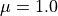. The cross sections may consequently represented by the integral of 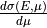 from 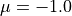 to 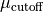, i.e. the cutoff scattering cosine which satisfies the condition 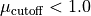.
- moniker = 'CoulombPlusNuclearElasticMuCutoff'¶
- property muCutoff¶
Return the value for
- classmethod parseNodeUsingClass(node, xPath, linkData, **kwargs)[source]¶
Generate an instance of this class from node.
- sortOrderIndex = 10¶
- class fudge.styles.CrossSectionReconstructed(label, derivedFrom, temperature=None, date=None)[source]¶
Bases:
StyleWithTemperatureStyle for cross section data reconstructed from resonance parameters.
- moniker = 'crossSectionReconstructed'¶
- classmethod parseNodeUsingClass(node, xPath, linkData, **kwargs)[source]¶
Generate an instance of this class from node.
- sortOrderIndex = 2¶
- class fudge.styles.Evaluated(label, derivedFrom, temperature, projectileEnergyDomain, library, version, date=None)[source]¶
Bases:
StyleWithTemperatureStyle for data entered by an evaluator.
- convertUnits(unitMap)[source]¶
Convert units for the style temperature and projectile energy domain.
- property library¶
Library property, i.e. the name of the library for this evaluation.
- moniker = 'evaluated'¶
- classmethod parseNodeUsingClass(node, xPath, linkData, **kwargs)[source]¶
Generate an instance of this class from node.
- property projectileEnergyDomain¶
Projectile energy domain property.
- sortOrderIndex = 0¶
- property version¶
Version property, i.e. the version of this library’s release.
- class fudge.styles.GriddedCrossSection(label, derivedFrom, date=None)[source]¶
Bases:
StyleStyle for cross section data that has been converted to a common energy grid as used in Monte Carlo Transport.
- findEntity(entityName, attribute=None, value=None)[source]¶
Default findEntity method. In general, sub-classes should over-ride this method. This method uses the following algorithm to find entity. Firstly, if ‘attribute’ is None, then self is assumed to have an attribute named entityName which is taken to be the desired entity. Otherwise, self is iterated over until an item with an attribute named attribute with value value is found. In either case, if an entity is found, its moniker value must be entityName. If no entity is found, raise AttributeError.
- property grid¶
Common energy grid (as used in Monte Carlo transport) property.
- moniker = 'griddedCrossSection'¶
- classmethod parseNodeUsingClass(node, xPath, linkData, **kwargs)[source]¶
Generate an instance of this class from node.
- sortOrderIndex = 110¶
- class fudge.styles.Heated(label, derivedFrom, temperature, date=None)[source]¶
Bases:
StyleWithTemperatureStyle for data that has been heated to a specific temperature, e.g. Doppler broaded cross sections.
- moniker = 'heated'¶
- classmethod parseNodeUsingClass(node, xPath, linkData, **kwargs)[source]¶
Generate an instance of this class from node.
- sortOrderIndex = 100¶
- class fudge.styles.HeatedMultiGroup(label, derivedFrom, flux, date=None, parameters='')[source]¶
Bases:
StyleStyle for data that has been heated and multi-grouped.
- property flux¶
Property for the flux (used to collapse to the multi-group energy structure) as a fudge.processing.flux.flux object.
- property inverseSpeed¶
Property for the inverse speed.
The group multi-group inverse speeds (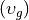) are calculated from 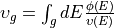, where
 is the projectile energy, 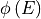 is the scalar flux,
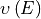 is the projectiles velocity, and the integral is over the
energy range in group
is the projectile energy, 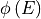 is the scalar flux,
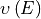 is the projectiles velocity, and the integral is over the
energy range in group  .
.
- moniker = 'heatedMultiGroup'¶
- property multiGroupFlux¶
Property for the flux (used to collapse to the multi-group energy structure) as a fudge.processing.flux.Gridded2d object.
- classmethod parseNodeUsingClass(node, xPath, linkData, **kwargs)[source]¶
Generate an instance of this class from node.
- processMultiGroup(style, tempInfo, indent)[source]¶
Method to set the multiGroupFlux and inverseSpeed properties.
- sortOrderIndex = 120¶
- toXML_strList(indent='', **kwargs)[source]¶
Returns an XML representation of self as a list of lines.
- property transportables¶
Property for the transportables, i.e. the list of particles for which the multi-group processing was performed.
- class fudge.styles.MonteCarlo_cdf(label, derivedFrom, date=None)[source]¶
Bases:
StyleThis is a processed data style with distributions processed for use in Monte Carlo transport codes which requires:
Conversion of 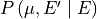 to 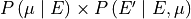; and
Conversion of 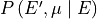 to 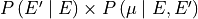
- moniker = 'MonteCarlo_cdf'¶
- classmethod parseNodeUsingClass(node, xPath, linkData, **kwargs)[source]¶
Generate an instance of this class from node.
- sortOrderIndex = 12¶
- class fudge.styles.MultiGroup(label, lMax, date=None)[source]¶
Bases:
StyleStyle for the multigroup data. This style is deprecated (i.e., it does not exists it GNDS 2.0 or higher).
- moniker = 'multiGroup'¶
- classmethod parseNodeUsingClass(node, xPath, linkData, **kwargs)[source]¶
Generate an instance of this class from node.
- sortOrderIndex = -1¶
- class fudge.styles.ProjectileEnergyDomain(min, max, unit)[source]¶
Bases:
AncestryIOStyle for the storage of the energy domain and the unit of the projectile in the laboratory frame.
- moniker = 'projectileEnergyDomain'¶
- class fudge.styles.Realization(label, derivedFrom, date=None)[source]¶
Bases:
StyleThis style represents a change to the mean value of some of the data.
- moniker = 'realization'¶
- classmethod parseNodeUsingClass(node, xPath, linkData, **kwargs)[source]¶
Generate an instance of this class from node.
- sortOrderIndex = 1¶
- class fudge.styles.SnElasticUpScatter(label, derivedFrom, date=None)[source]¶
Bases:
StyleThis is a thermal elastic upscatter style for data that has been heated and multi-grouped. This is similar to the heatedMultigroup style but with an upscatter correction included for elastic scattering.
- property flux¶
Property for the flux used to collapse to group structure.
- property inverseSpeed¶
Property for the inverse speed.
The group multi-group inverse speeds () are calculated from , where
is the projectile energy, is the scalar flux,
is the projectiles velocity, and the integral is over the
energy range in group .
- moniker = 'SnElasticUpScatter'¶
- classmethod parseNodeUsingClass(node, xPath, linkData, **kwargs)[source]¶
Generate an instance of this class from node.
- sortOrderIndex = 121¶
- toXML_strList(indent='', **kwargs)[source]¶
Returns an XML representation of self as a list of lines.
- property transportables¶
Property for the transportables, i.e. the list of particles for which the multi-group processing was performed.
- property upperCalculatedGroup¶
Return or set the index of the highest-energy group (counting from 0) impacted by the upscatter correction.
- class fudge.styles.Style(label, derivedFrom, date=None)[source]¶
Bases:
AncestryIO,ABCAbstract base class for the classes that represent actual GNDS style nodes.
- XMLCommonAttributes()[source]¶
Return a string with the style label, and if available, the date and derivedFrom properties.
- chain()[source]¶
Returns the list of derivedFrom style instances for self, ordered from self to root.
- property date¶
Property for the style release date.
- property derivedFrom¶
Property indicating the parent style label from which the data in style is derived.
- property derivedFromStyle¶
Property for the style (not just the label) from which the data in this style is derived.
- property documentation¶
Returns the documentation instance.
- findDerivedFromStyle(cls)[source]¶
Method to find the derived style that corresponds to the input argument style.
- findDocumentationEntriesWithKey(keyValue)[source]¶
Calls findEntriesWithKey the self’s documentation member and returns a list of [self, entry] for each entry in self’s documentation that findEntriesWithKey returns.
- findFormMatchingDerivedStyle(component, styleFilter=None)[source]¶
This method searches the link of derivedFroms, starting with self’s derivedFrom, to find a form in component matching one of the derivedFroms. If a form is found matching one of the derivedFroms, that form is returned. If no match is found, None is returned.
- keyName = 'label'¶
- property label¶
Property for the string identifier of this style.
- static parseNodeBase(node, xPath, linkData, **kwargs)[source]¶
Update the XPath with the current node label and return the attributes label, derivedFrom and date.
- property projectileEnergyDomain¶
Property for the projectileEnergyDomain at which the data in this style is evaluated.
- sibling(label)[source]¶
Returns the sibling of the current style which has a label that correspond to the input argument.
- abstract property sortOrderIndex¶
- property temperature¶
Property for the temperature at which the data in this style is evaluated.
- class fudge.styles.StyleWithTemperature(label, derivedFrom, temperature, date=None)[source]¶
Bases:
StyleBase class for the styles with a temperature attribute.
- static parseNodeBase(node, xPath, linkData, **kwargs)[source]¶
This methods reads the label, derivedFrom and date attributes, and the temperature child from node and return them as a tuple. The temperature is tranformed to an xData.physicalQuantity.PhysicalQantity object before it is returned in the tuple.
- property temperature¶
Property for the style temperature.
- class fudge.styles.Styles[source]¶
Bases:
AncestryIO_baseStores the list of nuclear data styles that appear inside a file.
The list generally includes one ‘evaluated’ style, plus 0 or more derived styles (Heated, HeatedMultiGroup, etc.).
- chains(ends=False, _styles=None)[source]¶
For self, determine the derived from chains for each style. If ends is True, trains which are a part of a longer train are removed from the list.
- findDocumentationEntriesWithKey(keyValue)[source]¶
Calls findDocumentationEntriesWithKey on each style in self and returns the results.
- findEntity(entityName, attribute=None, value=None)[source]¶
Default findEntity method. In general, sub-classes should over-ride this method. This method uses the following algorithm to find entity. Firstly, if ‘attribute’ is None, then self is assumed to have an attribute named entityName which is taken to be the desired entity. Otherwise, self is iterated over until an item with an attribute named attribute with value value is found. In either case, if an entity is found, its moniker value must be entityName. If no entity is found, raise AttributeError.
- findInstancesOfClassInChildren(cls, level=9999)[source]¶
Finds all instances of class cls in self’s children, grand-children, etc.
- getStyleOfClass(cls)[source]¶
Returns the style of class cls. If no style is found, None is returned. If more than 1 style is found, an exception is raised.
- moniker = 'styles'¶
Label for use as the tag or identifier for this style
- parseNode(stylesElement, xPath, linkData, **kwargs)[source]¶
Generate instances of allowed classes from the available XML nodes with the corresponding styles.
- preProcessingChainHead(label=None)[source]¶
Returns the pre-processing style that heads the chain containing the pre-processing label label. If label is None, there must be only one pre-processing chain and that head is returned.
- preProcessingChains(ends=True)[source]¶
Returns chains for each style that can be processed (i.e., Evaluated, CrossSectionReconstructed, AngularDistributionReconstructed and Realization).
- preProcessingHeadInChainWithLabel(label)[source]¶
Returns the pre-processing head of the chain containing the label label.
- preProcessingOnly()[source]¶
Returns True if self only contains pre-processed styles and False otherwise.
- static preProcessingStyles()[source]¶
Returns the list of style classes that can be processed. These are known as pre-processed styles.
- removeStyles(styleLabels)[source]¶
Removes all forms whose label matches one of the labels in removeStyles.
- temperatures(unit='MeV/k')[source]¶
Returns a listed of [ temperature, dictionary ] instances sorted by temperature. The directory keys are the monikers for the heated process styles. The associated values are the labels for that heated style. If the label is an empty string (i.e., ‘’), that moniker has not data.
- class fudge.styles.TemperatureInfo(temperature, heated, griddedCrossSection, URR_probabilityTables, heatedMultiGroup, SnElasticUpScatter)[source]¶
Bases:
objectFor a given temperature, stores the labels for each type of processed style. The list of processed styles represented are Heated, GriddedCrossSection, URR_probabilityTables, HeatedMultiGroup and SnElasticUpScatter. If a style is not present, its label will be an empty string.
- class fudge.styles.URR_probabilityTables(label, derivedFrom, date=None)[source]¶
Bases:
StyleThis is a precessed style for cross section probability tables
 to better capture the possible rapid cross section fluctuations in the unresolved resonance region.
to better capture the possible rapid cross section fluctuations in the unresolved resonance region.- moniker = 'URR_probabilityTables'¶
- classmethod parseNodeUsingClass(node, xPath, linkData, **kwargs)[source]¶
Generate an instance of this class from node.
- sortOrderIndex = 111¶
- fudge.styles.findAllOfStyle(cls, forms)[source]¶
Find all the occurences of a guven style class from a list of style classes.
- fudge.styles.findEvaluated(forms)[source]¶
Find the “evaluated” style class from a list of style classes. It calls a method that ensures that the list of style classes contains exactly one occurence of the “evaluated” style.
fudge.suites module¶
- class fudge.suites.CrossSectionSums[source]¶
Bases:
ExclusiveSuite- moniker = 'crossSectionSums'¶
- monikerByFormat = {'1.10': 'crossSections', '2.0.LLNL_3': 'crossSections'}¶
- class fudge.suites.ExternalFiles[source]¶
Bases:
ExclusiveSuite- moniker = 'externalFiles'¶
- class fudge.suites.FissionComponents[source]¶
Bases:
ExclusiveSuite- moniker = 'fissionComponents'¶
- class fudge.suites.IncompleteReactions[source]¶
Bases:
ExclusiveSuite- moniker = 'incompleteReactions'¶
- class fudge.suites.MultiplicitySums[source]¶
Bases:
ExclusiveSuite- moniker = 'multiplicitySums'¶
- monikerByFormat = {'1.10': 'multiplicities', '2.0.LLNL_3': 'multiplicities'}¶
- class fudge.suites.OrphanProducts[source]¶
Bases:
ExclusiveSuite- moniker = 'orphanProducts'¶
- class fudge.suites.Productions[source]¶
Bases:
ExclusiveSuite- moniker = 'productions'¶
- class fudge.suites.Reactions[source]¶
Bases:
ExclusiveSuite- asSortedList(PoPs)[source]¶
Returns a list of the reactions sorted. This method uses a reaction’s reactionProducts method to determine sorting order.
- moniker = 'reactions'¶
- class fudge.suites.Suite(allowedClasses, allow_href=False)[source]¶
Bases:
AncestryIO_bare,ABCBase class for a class member that is list like. For example, the lists inside the class reactionSuite (‘reactions’, ‘sums’, ‘productions’ and ‘fissionComponents’).
- add(newItem, setAncestor=True, addLazyParsingHelper=False)[source]¶
Adds newItem to the suite. If another item in the suite has the same label as newItem, a KeyError is raised. If newItem is not an allowed class, a TypeError is raised.
- Parameters:
newItem –
- Returns:
- property allow_href¶
- property allowedClasses¶
- checkAncestry(verbose=0, level=0)[source]¶
This method checks that all ancestryMembers are properly set up. This method checks self and all its child nodes.
- findInstancesOfClassInChildren(cls, level=9999)[source]¶
Finds all instances of class cls in self’s children, grand-children, etc.
- fixDomains(labels, energyMin, energyMax)[source]¶
Class fixDomains for each entry of self if it has a fixDomains method.
- property href¶
- parseNode(node, xPath, linkData, **kwargs)[source]¶
This method must be overrwritten by the derived class.
- classmethod parseNodeUsingClass(node, xPath, linkData, **kwargs)[source]¶
This method must be overrwritten by the derived class.
- pop(label, *args)[source]¶
Remove item by label, and return it. If the label is not found, raise KeyError :param label: :param args: :return:
- remove(label)[source]¶
Remove item by label. Returns True if label was present, otherwise returns False :param label: str :return: bool
- removeStyles(styleLabels)[source]¶
Removes all forms whose label matches one of the labels in removeStyles.
- replace(newItem)[source]¶
Replace an existing item with newItem. If no item in the suite has the same label as newItem, a KeyError is raised. If newItem is not an allowed class, a TypeError is raised.
- Parameters:
newItem –
- Returns:
fudge.sums module¶
This module contains the ‘sum’, ‘summand’ and ‘Summands’ classes
- class fudge.sums.Add(link=None, root=None, path=None, label=None, relative=False)[source]¶
Bases:
LinkLink representing one of the quantities that is added to the sum.
- moniker = 'add'¶
- class fudge.sums.CrossSectionSum(label, ENDF_MT)[source]¶
Bases:
AncestryIOStores a summed quantity (cross section, multiplicity, etc.) along with the list of what’s being summed over
- property Q¶
- ancestryMembers = ('summands', 'Q', 'crossSection')¶
- property crossSection¶
- fixDomains(labels, energyMin, energyMax)[source]¶
Calls the fixDomains method on the Q and crossSection members.
- heatCrossSection(temperature, EMin, lowerlimit=None, upperlimit=None, interpolationAccuracy=0.001, heatAllPoints=False, doNotThin=True, heatBelowThreshold=True, heatAllEDomain=True, setThresholdToZero=False, verbose=0)[source]¶
- keyName = 'label'¶
- moniker = 'crossSectionSum'¶
- classmethod parseNodeUsingClass(node, xPath, linkData, **kwargs)[source]¶
This method must be overrwritten by the derived class.
- removeStyles(styleLabels)[source]¶
Removes all forms whose label matches one of the labels in removeStyles.
- scaleSumToMatchSummands(label=None)[source]¶
Sum the summands cross section list, then set the sum to the cross section in self. If a style is specified, the sum will be stored under that style. Otherwise it replaces the evaluated style. :return:
- scaleSummandsToMatchSum(label=None)[source]¶
rescale the cross sections in the summands list so that their sum matches the cross section in self :return:
- sumSummands(label=None)[source]¶
Calculate the sum by looping over summands. If a style is specified, use that style if available. Otherwise sum the evaluated style. :param style: optional string identifying what style of data to sum (‘eval’, ‘recon’, etc.) :return:
- property summands¶
- class fudge.sums.MultiplicitySum(label, ENDF_MT)[source]¶
Bases:
AncestryIOStores a summed multiplicity along with the list of what’s being summed over
- ancestryMembers = ('summands', 'multiplicity')¶
- keyName = 'label'¶
- moniker = 'multiplicitySum'¶
- property multiplicity¶
- classmethod parseNodeUsingClass(node, xPath, linkData, **kwargs)[source]¶
This method must be overrwritten by the derived class.
- removeStyles(styleLabels)[source]¶
Removes all forms whose label matches one of the labels in removeStyles.
- property summands¶
- class fudge.sums.Summands[source]¶
Bases:
AncestryIO_base- moniker = 'summands'¶
- property summands¶
- class fudge.sums.Sums[source]¶
Bases:
AncestryIO_bareContains all summed quantities. Currently supports summed cross sections and multiplicities, could extend to other types of sums later.
- ancestryMembers = ('crossSectionSums', 'multiplicitySums')¶
- property crossSectionSums¶
- fixDomains(labels, energyMax)[source]¶
Calls the fixDomains for the crossSectionSums and multiplicitySums members.
- legacyMemberNameMapping = {'crossSections': 'crossSectionSums', 'multiplicities': 'multiplicitySums'}¶
- moniker = 'sums'¶
- property multiplicitySums¶
- parseNode(element, xPath, linkData, **kwargs)[source]¶
This method must be overrwritten by the derived class.
fudge.warning module¶
- exception fudge.warning.BadScatteringRadius(factor=3.0, gotAP=None, expectedAP=None, L=None, E=None, obj=None)[source]¶
Bases:
Warning
- exception fudge.warning.BadSpinStatisticalWeights(L, gJ, expectedgJ, reaction=None)[source]¶
Bases:
Warning
- class fudge.warning.Context(message='', warningList=None)[source]¶
Bases:
objectStore warnings in Context. This class contains location information (reactionSuite, reaction, etc) plus a nested list of warnings or other Context instances
- filter(threshold=None, include=None, exclude=None)[source]¶
Filter warning list to only include warnings at or greater than specified threshold, or to include (or exclude) specific classes of Warning. Returns new Context instance with screened list, plus dictionary indicating how many warnings were screened. Examples:
>>> context = Context() >>> newWarnings, screened = context.filter( threshold=Level.Moderate ) # or >>> newWarnings, screened = context.filter( exclude=[Warning.EnergyImbalance, Warning.Q_mismatch] )
‘include’ takes precedence over ‘exclude’, ‘threshold’ can be used with either ‘include’ or ‘exclude’
- exception fudge.warning.CorrelationsOutOfRange(badCount, worstCase, obj=None)[source]¶
Bases:
Warning
- exception fudge.warning.Coulomb_threshold_mismatch(threshold, thresholdCalc, obj=None)[source]¶
Bases:
Threshold_mismatch
- exception fudge.warning.Domain_mismatch(lowBound, highBound, xscLowBound, xscHighBound, obj=None)[source]¶
Bases:
Warning
- exception fudge.warning.EnergyDepositionExceptionRaised(Exception_String, obj=None)[source]¶
Bases:
ExceptionRaised
- exception fudge.warning.EnergyImbalance(energy_in, index, availableEnergy, deposition_per_product, obj=None)[source]¶
Bases:
Warning
- exception fudge.warning.ExceptionRaised(Exception_String, obj=None)[source]¶
Bases:
WarningIf we run into an exception when running check(), try to exit gracefully and return this warning.
- exception fudge.warning.ExtraOutgoingEnergy(energy_in, obj=None)[source]¶
Bases:
WarningIf an outgoing energy distribution ends with more than one energy with probability=0, proper unitbase/correspondingPoints treatment is unclear. Distribution should end with exactly one P=0 point.
- exception fudge.warning.FissionEnergyImbalance(energy_in, index, availableEnergy, deposition_per_product, obj=None)[source]¶
Bases:
EnergyImbalance
- exception fudge.warning.GapInCrossSection(minGapEnergy, maxGapEnergy, obj=None)[source]¶
Bases:
Warning
- exception fudge.warning.IncompleteDistribution(energy_in, lowerMu, upperMu, obj=None)[source]¶
Bases:
Warning
- exception fudge.warning.IncorrectCoulombIdenticalParticlesFlag(projectile, target, obj=None)[source]¶
Bases:
Warning
- exception fudge.warning.InvalidAngularMomentaCombination(L, S, J, name, obj=None)[source]¶
Bases:
Warning
- class fudge.warning.Level(value, names=None, *, module=None, qualname=None, type=None, start=1, boundary=None)[source]¶
Bases:
EnumDefine severity levels for warnings.
- Fatal = 'Fatal'¶
- Minor = 'Minor'¶
- Moderate = 'Moderate'¶
- Pedantic = 'Pedantic'¶
- Severe = 'Severe'¶
- exception fudge.warning.MissingInterpolationQualifier(transportable=True, obj=None)[source]¶
Bases:
Warning
- exception fudge.warning.NegativeEigenvalues(negativeCount, worstCase, obj=None)[source]¶
Bases:
Warning
- exception fudge.warning.NegativeProbability(value, energy_in, energy_out=None, mu=None, obj=None)[source]¶
Bases:
Warning
- exception fudge.warning.ParameterCovarianceMismatch(nParams, matrixShape, obj=None)[source]¶
Bases:
Warning
- exception fudge.warning.PotentialScatteringNotConverged(L, E, fom, fomTarget, obj=None)[source]¶
Bases:
Warning
- exception fudge.warning.PrimaryGammaEnergyTooLarge(energy, fraction, obj=None)[source]¶
Bases:
WarningPrimary gamma energy should be <= available energy (depending on which discrete level it ends up in)
- exception fudge.warning.SummedCrossSectionMismatch(maxPercentDiff, obj=None)[source]¶
Bases:
Warning
- exception fudge.warning.SummedMultiplicityMismatch(maxPercentDiff, obj=None)[source]¶
Bases:
Warning
- exception fudge.warning.TestSkipped(testName, reason, obj=None)[source]¶
Bases:
Warningindicate if test was skipped due to missing information
- exception fudge.warning.Threshold_mismatch(threshold, thresholdCalc, obj=None)[source]¶
Bases:
Warning
- exception fudge.warning.URRinsufficientEnergyGrid(Lval, Jval, eLow, eHigh, obj=None)[source]¶
Bases:
Warning
- exception fudge.warning.URRunphysicalWidth(Lval, Jval, resonanceReaction, obj=None)[source]¶
Bases:
Warning
Bases:
Warning
- exception fudge.warning.UnnormalizedDistribution(energy_in, index, integral, obj=None)[source]¶
Bases:
Warning
- exception fudge.warning.UnnormalizedDistributionAtMu(mu, integral, obj=None)[source]¶
Bases:
WarningOnly appears when checking legacy ENDL data (I=1 and 3)
- exception fudge.warning.UnnormalizedKMDistribution(energy_in, index, integral, obj=None)[source]¶
Bases:
UnnormalizedDistribution
- exception fudge.warning.UnorthodoxParticleNotImplemented(particleId, obj=None)[source]¶
Bases:
Warning
- exception fudge.warning.ValueOutOfRange(contextMessage, value, lowerBound, upperBound, obj=None)[source]¶
Bases:
Warning
- exception fudge.warning.VarianceTooLarge(index, relativeUncertainty, absoluteUncertainty, obj=None)[source]¶
Bases:
Warning
- exception fudge.warning.VarianceTooSmall(index, relativeUncertainty, absoluteUncertainty, obj=None)[source]¶
Bases:
Warning
- exception fudge.warning.Warning(level: Level, obj=None)[source]¶
Bases:
BaseExceptionGeneral Warning class. Contains link to problem object, xpath in case the object leaves memory, and information about the warning or error.
- exception fudge.warning.WrongDistributionComponent(component, reactionType='2-body', obj=None)[source]¶
Bases:
Warning
Module contents¶
Fudge is a Python package which allows one to view, plot and modify GNDS nuclear data, and also process GNDS into forms suitable for Monte Carlo and deterministic transport applications. Processed data are stored as additional data ‘forms’ inside a GNDS file. The GIDIplus C++ API can then be used to read and sample from the processed GNDS files.
Getting at fudge’s python scripts.¶
To use fudge, one must add the location of the fudge scripts to the PYTHONPATH environment variable. (PYTHONPATH is the environment variable used by python when searching for imported python modules (files). On LLNL’s computing system (LC) this would look something like,
export PYTHONPATH=$PYTHONPATH:/usr/gapps/fudge/current OR PYTHONPATH=$PYTHONPATH:/usr/gapps/fudge/development
for the bash shell.
Alternatively, one can add the following lines near the top of a python script (or type them at the prompt)
>>> import sys
>>> sys.path.append( "/usr/gapps/fudge/current" )
>>> import fudgeDefaults
>>> fudgeDefaults.NDF_DATABASE_DIR = /my/personal/database/processed
Reading fudge’s documentation.¶
In general, one should first create a reactionSuite class object (also sometimes called a Protare for Projectile + Target + Evaluation). For example the beginning of a fudge session may look like,
>>> from fudge import reactionSuite
>>> RS = reactionSuite.read("path/to/GNDS/reactionSuite.xml")
It is therefore important to read the documentation on the reactionSuite class. For an overview of creating, visualizing and processing GNDS reactionSuites we recommend starting with the documentation in doc/html/index.html (in particular the GNDS tutorial).